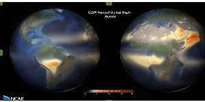

The Community Earth System Model (CESM) is a fully-coupled, global climate model that provides state-of-the-art computer simulations of the Earth's past, present, and future climate states.
CESM is sponsored by the National Science Foundation (NSF) and the U.S. Department of Energy (DOE). Administration of the CESM is maintained by the Climate and Global Dynamics Division (CGD) at the National Center for Atmospheric Research (NCAR).
We will run the CAM5 model on Hexagon.

We will present some of our results